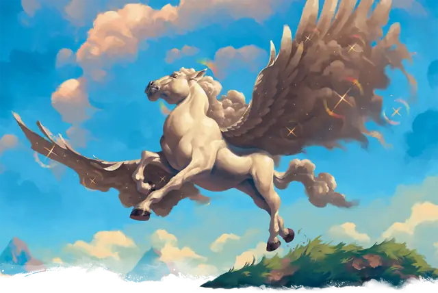

Пегас
Pegasus
Большой Небожитель, Хаотичный Добрый

Класс Защиты 12 Инициатива +2 (12)
Хиты 59 (7к10 + 21)
Скорость 60 футов, Полёта 90 футов
| мод | спас | ||
|---|---|---|---|
| СИЛ | 18 | +4 | +4 |
| ЛОВ | 15 | +2 | +4 |
| ТЕЛ | 16 | +3 | +5 |
| мод | спас | ||
|---|---|---|---|
| ИНТ | 10 | +0 | +0 |
| МДР | 15 | +2 | +4 |
| ХАР | 13 | +1 | +3 |
Чувства пассивное Восприятие 16
Языки знает Небесный, Общий, Эльфийский и Сильван, но не говорит
Опасность 2 (450 опыта; БВ +2)
Действия
Копыта. Бросок рукопашной атаки: +6, досягаемость 5 фт. Попадание: 7 (1к6 + 4) Дробящего урона плюс 5 (2к4) урона Излучением.
Бонус мастерства +2
Среда обитания Леса, Луга, Холмы, Верхние планы
Сокровища Отсутствуют
Пегас
Неуловимый крылатый скакун
Пегасы — это крылатые разумные кони благородных пород, которые столь же величавы, сколь и неуловимы. Многие пегасы сторонятся дел прочих созданий, предпочитая обитать средь идиллических пастбищ, парящих островов или на иных планах бытия. Иногда они служат божествам Страны Фей и Верхних планов, приходя на помощь героям в час нужды. В редких случаях пегасы могут сдружиться с добродетельными людьми и стать им верными спутниками и скакунами.
На пегасов охотятся прислужники зла, отчего многие из этих крылатых коней при виде чужаков тотчас обращаются в бегство. Совершите бросок по таблице «Подношения пегасам» или определите сами, как можно выказать добрые намерения настороженному пегасу.
Подношения пегасам
| к4 | Пегас не улетит от того, кто… |
| 1 | Несёт при себе снаряжение героя, которому пегас когда-то помогал. |
| 2 | Предлагает волшебный плод или воду из святого источника. |
| 3 | Поёт песнь на небесном, друидическом языке или сильване. |
| 4 | Носит облачение древнего героического ордена. |